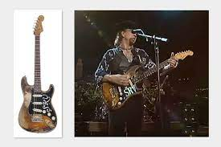

Stevie Ray Vaughn Stratocaster
"The one Stratocaster"

Christopher Cross sold the guitar to Stevie after he hated the guitar
The guitar influenced many Blues legends such as John Mayer and Joe Bonamassa which modernly shaped the Blues
The guitar saved the blues after Stevie created a new genre which is Texas blues which is the opposite to the normal blues
The guitar has been an inspiration to many after Stevie showed that with a good guitar you can always create better music